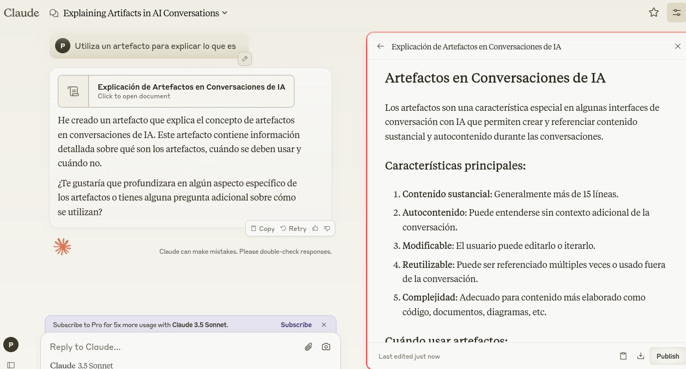

Servicios de IA generativa de texto
Entre los modelos de procesamiento de lenguaje natural destaca ChatGPT (en sus dos versiones 3.5 y 4), junto con Claude 3.5, Le Chat de Mistral (modelo Large), Copilot de Microsoft y Gemini de Google. A continuación se describe cada uno de ellos junto a alguna opción más.
ChatGPT
ChatGPT de OpenAI. Existen dos versiones de cara al público, la 4o (omni) accesible a todos los usuarios, aunque para los usuarios de la versión gratuita tiene un límite en los mensajes, este límite es variable según el momento (suelen ser unas 15 interacciones con el chatbot). Cuando se alcanza el límite se activa la versión 4o mini que no es tan avanzada como la 4o. Durante 2024 se espera el lanzamiento de la versión 5 [1] [2], que responderá a las consultas de los usuarios con una precisión y coherencia sin precedentes, proporcionando interacciones más ricas y significativas. Por el momento, ChatGPT-4o parece ser superior en capacidades al resto de chatbots disponibles y únicamente Claude 3.5 Sonnet lo iguala y en algunos casos supera.
Una de las características adicionales de ambas versiones sobre otros chatbots es la posibilidad de crear instrucciones personalizadas que permiten afinar el contexto de las conversaciones y las respuestas que obtenemos, de esta forma también se evita que el chatbot olvide el tema principal de la conversación en diálogos extensos.
Además, en la versión Plus se permite el la creación de GPT que son versiones de ChatGPT con instrucciones y datos específicos para crear una función concreta. Esto aumenta exponencialmente la potencia del chatbot, ya que podemos incluir documentación propia que aumenta sus conocimientos. Actualmente, las versiones gratuitas pueden utilizar los GPTs, consulta en este mismo recurso: GPTs de ChatGPT.
Copilot
El antiguo Chat de Bing ha sido substituido por Copilot. Detrás de este chatbot encontramos a ChatGPT que ha sido adaptado por Microsoft para las funciones de búsqueda en la web. Por lo tanto, aunque sea ChatGPT-4 el que nos responda cuando hablamos con él, sus respuestas son radicalmente diferentes de la versión de OpenAI. Esto es así, ya que todo su potencial se dedica a la búsqueda web y ante las preguntas que le hagamos nos mostrará las respuestas que ha encontrado Internet y no las que provienen de su propio conocimiento, lo que hace que las conversaciones sean mucho más pobres que las de su equivalente. Dispone de tres modos de conversación, desde el más formal hasta el más imaginativo y creativo, pasando por un nivel intermedio. Igual que Gemini interpreta imágenes, aunque con menor fiabilidad y también incorpora el generador de imágenes DALL·E 3, por lo que bastará con que le digamos qué imagen queremos para que nos la genere, todo en el mismo espacio.
Copilot está incorporado en el navegador Edge y puede hacer resúmenes de archivos PDF o responder preguntas sobre la página que se está visualizando.
Claude 3.5
Claude 3.5 de Anthropic, fue lanzado en junio de 2024 y tiene un rendimiento claramente superior al antiguo ChatGPT-3.5 y similar a ChatGPT-4 y 4o, incluso ligeramente superior en algunas ocasiones. Es, pues, un competidor directo de ChatGPT, ya que la calidad de sus respuestas lo hacen una alternativa real a ChatGPT.
Claude dispone de lo que han llamado "artefactos". Los artefactos permiten que determinadas respuestas como textos de cierta extensión, código de programas y otros objetos se reproduzcan en un espacio aparte que aparece en la parte derecha. De este modo en la parte izquierda se mantienen una conversación mientras en la derecha se ve el resultado.
{kind=link}

Este chatbot es recomendable para aquellos que no disponen de una versión de pago de ChatGPT porque en estos momentos es superior a cualquiera de los gratuitos.
"Le Chat" de Mistral
La empresa de origen francés Mistral (https://mistral.ai) ha creado un chatbot llamado Le Chat al que se puede acceder desde https://chat.mistral.ai. En su fase beta consta de tres modelos: Large, Next y Small. El primer modelo, Large, dispone de mayor capacidad de comprensión y razonamiento, el segundo, Next, es más conciso en sus respuestas, aunque con una capacidad similar al primero; y el tercero, Small, permite respuestas muy rápidas, aunque de calidad ligeramente inferior. Su utilidad para el profesorado es similar a la de ChatGPT-3.5, por lo que puede ser un complemento a la versión gratuita de ChatGPT.
Mistral, además, ha liberado el código de dos de sus modelos que quedan a disposición de programadores y desarrolladores, son los modelos Mistral 7B y Mixtral 8x7B (https://mistral.ai/technology/#models) que pueden ser probados desde HuggingChat.
Google Gemini
Gemini de Google no tiene la calidad de ChatGPT en cuanto a la calidad del texto generado, ya que no puede seguir determinadas instrucciones complicadas. No obstante, tiene un punto a su favor, es la capacidad de interpretar imágenes y extraer texto de ellas, lo que lo hace especialmente útil, por ejemplo, interpretando infografías o texto escrito a mano.
Gemini tiene un buen conocimiento de una gran cantidad de libros, muchos de los cuales son desconocidos para otras IA, por lo que puede ser muy interesante para resumir o extraer ideas de obras concretas.
Llama 3
Llama 3 de Meta (Facebook) es una IA de código abierto que no dispone de una página web propia donde poder usarla. Sin embargo, el hecho de que sea de código abierto hace que poco a poco aparezcan otros servicios ajenos a Meta que lo incorporan. Puede utilizarse desde:
- Perplexity Labs
- Llama2.ai
- Hugging Chat, dispone de una variedad de modelos para utilizar, entre los que se encuentra Llama 3.
Pi
Pi es un chatbot perteneciente Inflection AI, una empresa centrada en la IA ética y segura. Que trabajan para construir una IA accesible, útil y amigable para todos los usuarios.
Phind
Phind es un chatbot que dispone de dos modos de conversación, uno especializada en búsquedas, donde intentar responder a través búsquedas en Internet (Search) y otro basado únicamente en la conversación a través de sus conocimientos (Chat). Aunque mantiene cualquier tipo de conversación, está especialmente enfocado a los desarrolladores y la programación.
Los diferentes chatbots discutidos aquí se utilizan mediante páginas web que nos permiten utilizarlos. Sin embargo, existe algún servicio como Jan.ai que nos permitirá instalar los modelos de lenguaje en nuestro ordenador con lo que no necesitaremos Internet y, además, se asegura la absoluta privacidad de las conversaciones. No obstante, los modelos de lenguaje que encontraremos suelen ser de calidad inferior a los que encontramos en las páginas web citadas anteriormente. Si te interesa crear tus propios chatbots personalizados, consulta la sección Crear chatbots.
En la página LMSYS Chatbot Arena Leaderboard disponemos de una clasificación de los mejores chatbots según los usuarios. El usuario escribe un prompt al que responden dos de ellos y, sin saber cuál es cuál, el usuario elige la mejor respuesta. Una vez votada una respuesta nos dirá el modelo que es. Si deseas participar en la elaboración de esta lista puedes hacerlo en la página lmarena.ai.